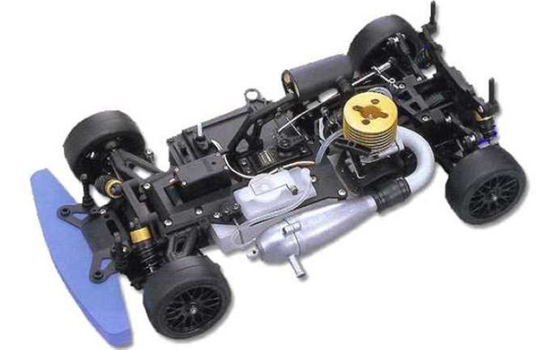

京商 V-One S

引用元画像：京商公式サイト
📋 基本情報
| メーカー | 京商（Kyosho） |
|---|---|
| 機種名 | V-One S（ブイワン エス） |
| シャーシ略称 | V-One S |
| 型番 | 31111（D2 AMG Mercedes CLK） ※他に31112、31114、31117、31118などボディバリエーションあり |
| 発売時期 | 2001年 |
| 価格 | 詳細不明 |
| 生産状況 | 生産終了 |
| カテゴリー | ラジコンカー（1/10スケール GPツーリングカー） |
| サブカテゴリー | GPツーリングカー（4WD ベルトドライブ） |
| シリーズ | PureTen V-Oneシリーズ |
📏 シャーシスペック
| スケール | 1/10 |
|---|---|
| フレーム | アルミプレートシャーシ |
| 駆動方式 | ベルトドライブ4WD（3ベルト方式） |
| デフギヤ | ギヤデフ（前後） ※オイル粘度変更で調整可能 |
| ベアリング | フルベアリング仕様 |
| ドライブシャフト | ドッグボーン式 |
⚙️ 駆動系
| エンジン | 京商 GS15-R（.12-.15クラス）標準装備 ※リコイルスターター付属 |
|---|---|
| 燃料タンク | 詳細不明 |
| トランスミッション | シングルスピード |
| クラッチ | 遠心クラッチ |
🔧 サスペンション
| 形式 | 4輪ダブルウィッシュボーン独立懸架 |
|---|---|
| ダンパー | コイルスプリング付きオイルダンパー×4本 ※車高調整機能装備 |
| アッパーアーム | フロント：樹脂製一体成型タイロッド＆アッパーアーム（調整不要） |
💡 特徴
PureTen V-Oneシリーズの始祖
- 2001年にリリースされたピュアテンV-Oneシリーズの初代モデル
- 京商が永年つちかってきたレーシングテクノロジーを満載
- 高い戦闘力とビギナーにも配慮した設計の両立
3ベルトドライブ4WDシステム
- 高効率な3ベルトドライブ4WDメカ
- ベルトドライブによる低重心設計と回転マス低減を実現
- 力強くレーシーな走りを披露
高い戦闘力を発揮する装備
- 車高調節機能を装備したダブルウィッシュボーン4輪独立サスペンション
- フルベアリング仕様で滑らかな動作
- 調節不要の樹脂製一体成型のタイロッド＆フロントアッパーアーム（ビギナー配慮）
GS15-Rエンジン標準装備
- 引っ張るだけで始動できるリコイルスターター付き.12-.15クラスエンジンをシャーシミッドに搭載
- 迫力あるエキゾーストノートと力強い走り
多彩なボディバリエーション
- D2 AMG Mercedes CLK（31111）
- Castrol Mugen NSX（31112）
- McLaren BMW FA（31114）
- Calsonic Skyline（31117）
- Castrol Tom's Supra（31118）
- その他、Cerumo Supra、Vauxhall Astra、Plus e Taisan Advan GT3-RSなど
🔧 ぽすとそに工房での修理実績
修理難易度
★★★★★（非常に困難）
情報の少なさと、パーツ供給が極端に少ないため、修理が非常に困難です。
よくある故障・注意点
- ベルトの伸び・摩耗：3ベルトドライブ方式のため、ベルトの定期的な点検・交換が必要
- ベルトテンショナーの劣化：張り具合が緩むと駆動効率が低下
- ギヤデフのオイル漏れ：Oリングの劣化によるオイル漏れ
- ドッグボーンドライブシャフトの摩耗：ジョイント部分の定期的なグリスアップが必要
- オイルダンパーのオイル漏れ：Oリングシールの劣化によるオイル漏れ
- エンジンのメンテナンス：GS15-Rエンジンの定期的な清掃・調整が必要
- パーツ入手困難：生産終了により、特にベルト類やギヤデフ関連のパーツが入手困難
修理のポイント
- ベルトの張り具合チェック：ベルトの張り具合を定期的にチェック（中央部を押して5mm程度の沈み込みが理想）
- ベルトテンショナーの調整：ベルトが緩んだらテンショナーで調整、ベルトが摩耗している場合は早めに交換
- ドライブプーリーの点検：プーリーの歯が摩耗していないか確認、摩耗している場合は交換
- ギヤデフのオイル交換：走行特性に合わせてデフオイルの粘度を変更可能（低粘度＝旋回性向上、高粘度＝直進安定性向上）
- オイルダンパーのメンテナンス：Oリングシールを定期的に交換、ダンパーシャフトに傷がないか確認
- ボールジョイントの点検：ボールコネクターが緩んでいないか確認、緩んでいる場合は交換
- フルベアリングの清掃：ベアリングにゴミや砂が入り込むと摩耗が進むため、定期的に清掃・グリスアップ
その他の特徴
- ビギナーにも配慮した設計で、調整不要の樹脂製一体成型パーツを多用
- 京商カップ（KYOSHO CUP）で使用可能な公式レース車両
- V-One RRR、V-One SII、V-One SIIIなど後継機種が多数存在し、一部パーツ互換性あり
- 現在はパーツ供給が極端に少ないため、修理には中古パーツの活用や代替パーツの検討が必要
- 耐久性と戦闘力を兼ね備えたシャーシで、レースで多数の実績あり